| NOMBRE | PUNTOS | INFLUENCIA | IMAGEN |
|---|---|---|---|
| Lebron James | 38,652 | El estadístico R-Cuadrada indica que el modelo ajustado explica 26.11% de la variabilidad en victorias. El coeficiente de correlación es igual a 0.51, indicando una relación moderadamente fuerte entre las variables, lo que significa que este jugador ha sido importante para sus equipos. | 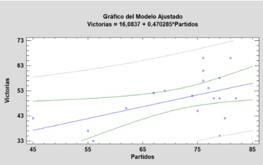 |
| Kareem Abdul-Jabbar | 38,387 | El estadístico R-Cuadrada indica que el modelo ajustado explica 23.60% de la variabilidad en victorias. El coeficiente de correlación es igual a 0.49, indicando una relación relativamente débil entre las variables, lo que sugiere que este jugador no ha tenido gran importancia para sus equipos. | 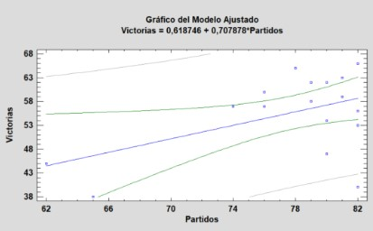 |
| Karl Malone | 36,928 | El estadístico R-Cuadrada indica que el modelo ajustado explica 5.00% de la variabilidad en victorias. El coeficiente de correlación es igual a 0.22, indicando una relación relativamente débil entre las variables. Esto significa que este jugador no ha sido importante para sus equipos. | 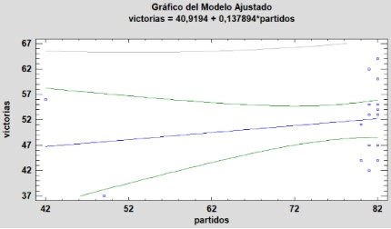 |
| NOMBRE | ASISTENCIAS | INFLUENCIA | IMAGEN |
|---|---|---|---|
| John Stockton | 15,806 | El estadístico R-Cuadrada indica que el modelo ajustado explica 4,30947% de la variabilidad en victorias. El coeficiente de correlación es igual a 0,207593, indicando una relación relativamente débil entre las variables. Por lo tanto, lo que quiere decir es que no fue tan importante para su equipo. | 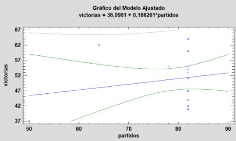 |
| Jason Kidd | 12,091 | El estadístico R-Cuadrada indica que el modelo ajustado explica 24,2356% de la variabilidad en victorias. El coeficiente de correlación es igual a 0,492297, indicando una relación relativamente débil entre las variables. Lo que significa que este jugador no tuvo mucha importancia para su equipo. | 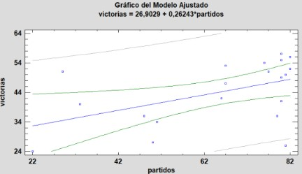 |
| Chris Paul | 11,501 | El estadístico R-Cuadrada indica que el modelo ajustado explica 1,16735% de la variabilidad en victorias. El coeficiente de correlación es igual a 0,108044, indicando una relación relativamente débil entre las variables. Este jugador no ha sido nada importante para sus equipos. | 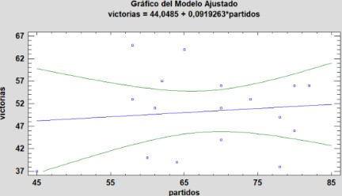 |
| NOMBRE | TAPONES | INFLUENCIA | IMAGEN |
|---|---|---|---|
| Hackeem Olajuwon | 3,830 | El estadístico R-Cuadrada indica que el modelo ajustado explica 35,2038% de la variabilidad en victoria. El coeficiente de correlación es igual a 0,593328, indicando una relación moderadamente fuerte entre las variables. Por lo tanto, lo que quiere significar este resultado es que sí que tubo importancia para sus equipos. | 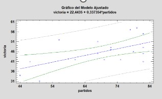 |
| Dikembe Mutombo | 3,289 | El estadístico R-Cuadrada indica que el modelo ajustado explica 4,56212% de la variabilidad en victoria. El coeficiente de correlación es igual a -0,213591, indicando una relación relativamente débil entre las variables. Por lo tanto, lo que quiere decir es que no fue nada importante para su equipo. | 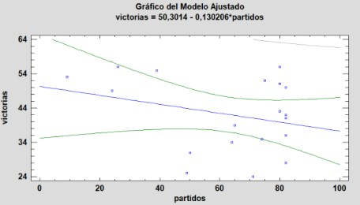 |
| Kareem Abdul-Jabbar | 11,501 | El estadístico R-Cuadrada indica que el modelo ajustado explica 23,5981% de la variabilidad en victorias. El coeficiente de correlación es igual a 0,485778, indicando una relación relativamente débil entre las variables, por lo que indica que este jugador no ha tenido gran importancia para sus equipos. | 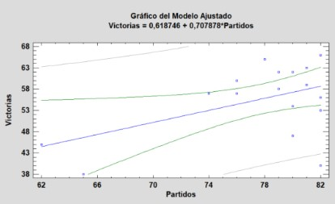 |
| NOMBRE | REBOTES | INFLUENCIA | IMAGEN |
|---|---|---|---|
| Wilt Chamberlain | 23,934 | El estadístico R-Cuadrada indica que el modelo ajustado explica 24,4595% de la variabilidad en victoria. El coeficiente de correlación es igual a 0,494565, indicando una relación relativamente débil entre las variables. Por lo tanto, lo que quiere decir es que no fue tan importante para su equipo. | 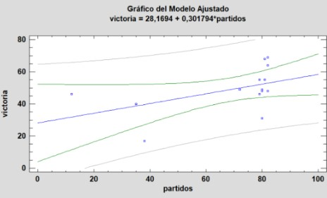 |
| Bill Russell | 21,620 | El estadístico R-Cuadrada indica que el modelo ajustado explica 55,1132% de la variabilidad en victorias. El coeficiente de correlación es igual a 0,742383, indicando una relación moderadamente fuerte entre las variables. Este jugador sí que ha sido importante para sus equipos con los que ha jugado. | 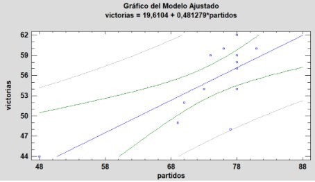 |
| Kareem Abdul-Jabbar | 17,440 | El estadístico R-Cuadrada indica que el modelo ajustado explica 23,5981% de la variabilidad en victorias. El coeficiente de correlación es igual a 0,485778, indicando una relación relativamente débil entre las variables, por lo que indica que este jugador no ha tenido gran importancia para sus equipos. | 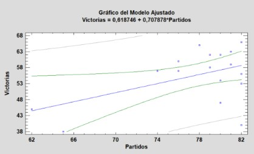 |
| NOMBRE | ROBOS | INFLUENCIA | IMAGEN |
|---|---|---|---|
| JOHN STOCKTON | 3,265 | El estadístico R-Cuadrada indica que el modelo ajustado explica 4,32796% de la variabilidad en Victorias. El coeficiente de correlación es igual a 0,208038, indicando una relación relativamente débil entre las variables, por lo que indica que este jugador no ha tenido gran importancia para sus equipos. | 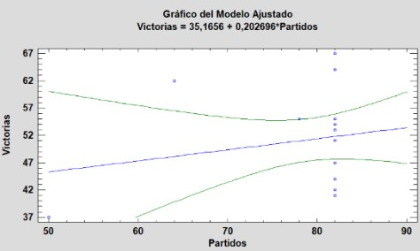 |
| Jason Kidd | 2,684 | El estadístico R-Cuadrada indica que el modelo ajustado explica 24,2356% de la variabilidad en victorias. El coeficiente de correlación es igual a 0,492297, indicando una relación relativamente débil entre las variables. Lo que significa que este jugador no tuvo mucha importancia para su equipo. | 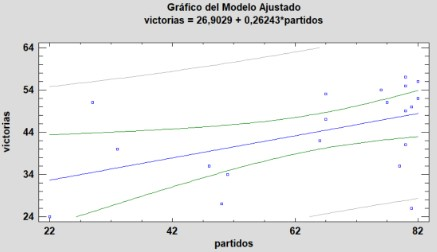 |
| Michael Jordan | 2,514 | El estadístico R-Cuadrada indica que el modelo ajustado explica 20,6294% de la variabilidad en Victorias. El coeficiente de correlación es igual a 0,454196, indicando una relación relativamente débil entre las variables. Lo que significa que este jugador no tuvo mucha importancia para su equipo. | 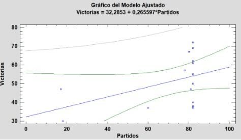 |
| TOP | JUGADOR | C.correlación |
|---|---|---|
| 1 | Michael Jordan | 0,4541 |
| 2 | LeBron James | 0,5109 |
| 3 | Kareem Abdul-Jabbar | 0,48577 |
| 4 | Bill Russell | 0,7423 |
| 5 | Magic Johnson | 0,6709 |
| 6 | Wilt Chamberlain | 0,4945 |
| 7 | Larry Bird | 0,8626 |
| 8 | Shaquille O'Neal | 0,3395 |
| 9 | Tim Duncan | 0,4597 |
| 10 | Kobe Bryant | 0,6318 |